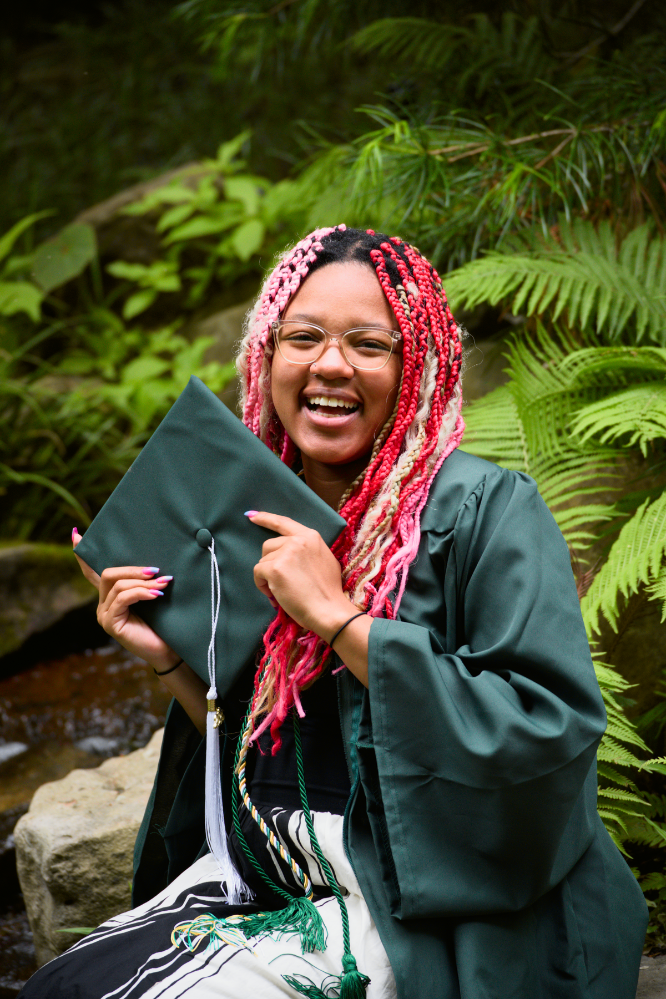
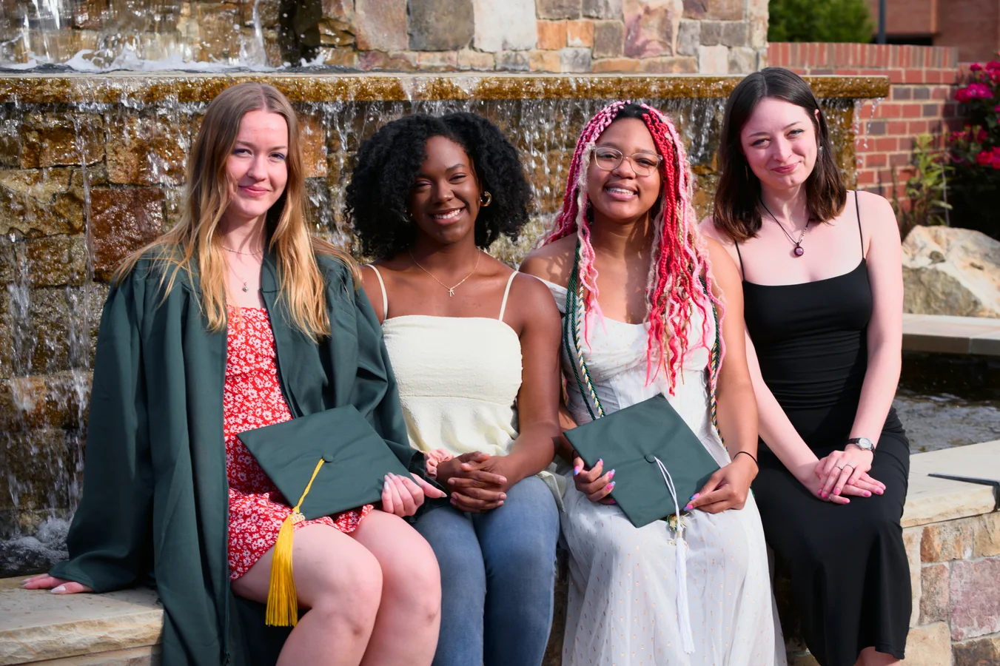

Graduation Portraits
Celebrate the achievement with portraits that feel like you.
As a Charlotte-based photographer and UNC Charlotte student, I know how busy things can get leading up to graduation. That's why sessions can be planned on or near campus for convenience, or at other meaningful locations throughout Charlotte and the surrounding area.
Nearly a decade behind the camera, from film to digital photography, with a focus on natural portraits, genuine moments, and creative use of the environment.
UNCC Student • Charlotte-Based • Local-Owned Business
Choose Your Session
Choose the session that best fits the amount of time, variety, and coverage you're looking for.
Mini Session
$125
A quick, focused session perfect for capturing the graduation essentials.
- 30 min. Portrait Session
- One Graduate
- Any Campus or Charlotte Location
- 10+ Professionally Edited Photos
- Delivered via Digital Gallery
Most Popular
Standard Session
$200
More variety for a complete graduation portrait collection across multiple campus settings.
- 60–90 min. Portrait Session
- One Graduate
- Any Campus or Charlotte Location
- 20–25+ Professionally Edited Photos
- Delivered via Digital Gallery
Group Session
$280
Celebrate together while still getting individual portraits of each graduate.
- 90 min. Group Session
- 2–4 Graduates
- Any Campus or Charlotte Location
- 30–40+ Professionally Edited Photos
- Individual and Group Portraits
- Delivered via Digital Gallery

What to Expect
Before Your Session
We'll choose a location and talk about the style of portraits you're looking for. Sessions can take place on or near campus, or at another Charlotte-area location that fits the look you have in mind.
During Your Session
The goal is to create variety while keeping the session relaxed and comfortable. I'll guide you through a mix of natural poses while making use of your graduation attire, campus landmarks, and the surrounding environment.
After Your Session
Your final selections will be professionally edited and delivered through a high-resolution digital gallery, ready to download and share.

Ready to Celebrate?
Tell me which session you're interested in and when you're looking to shoot.
Book Your Graduation Session